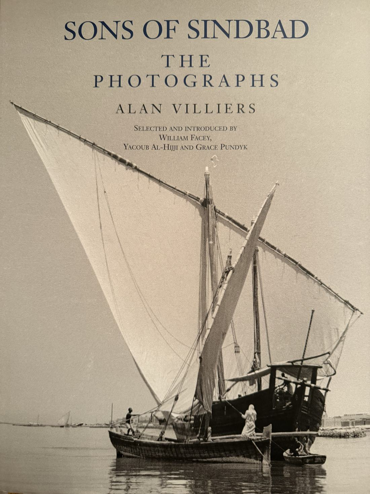
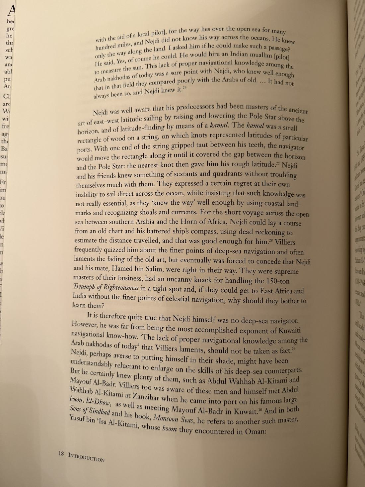

Photographs of 1938 and 1939, published 2006 · Cover, introduction pages 18, 19 and 32, plates on pages 116, 117, 128, 129 and 155, and the index
Sons of Sindbad: The Photographs, Alan Villiers' pictures of the family's ships
What it is
The companion volume to Sons of Sindbad prints Villiers' photographs with his own words beside them. Its introduction names Abdul Wahhab Al-Kitami of El-Dhow and Yusuf bin Isa Al-Kitami of Samhan as true deep-sea masters, the kind of navigator Villiers' own nakhuda Nejdi was not. The plates show the crew of Al-Dhow hoisting the Triumph's yard at Zanzibar, and Al-Badri beached at Kwale island, «owned by Bedar bin Abdul-Wahhab».
Why it matters
The original photographs of the family's ships, with the editors' account of the family's navigators.
Page copies


Notes
The book calls Al-Badri «owned by Bedar bin Abdul-Wahhab». She belonged to his father, Abdulwahab Abdulaziz; Bader became her nakhuda when his father moved to Al-Daw. The Abdul-wahhab Kalifa on page 155 is Abdulwahab Khalifa Al-Ghanim, son of Khalifa bin Shaheen Al-Ghanim. The photographs themselves are already on the profiles. Only the first pages are shown here. Family members who sign in can see all 9 pages.
Others named
Sources
William Facey, Yacoub Al-Hijji and Grace Pundyk, Sons of Sindbad: The Photographs, Arabian Publishing, 2006.
How this text was made: Pages of a published book.
Open in the interactive site